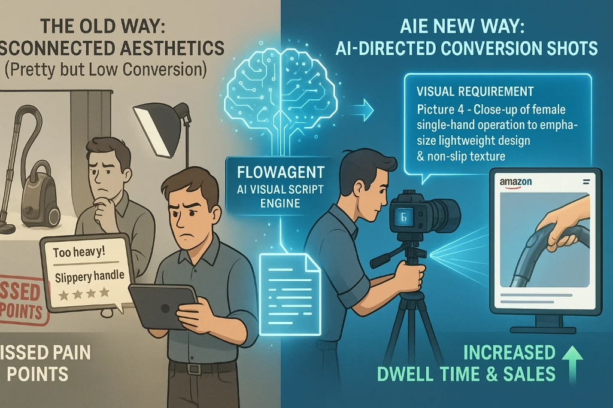

告别"凭感觉设计"：如何用AI生成"视觉脚本"
你的主图很漂亮但转化率低？学习如何用AMZ FlowAgent将用户痛点转化为具体的"视觉脚本"，指导摄影师拍出高转化图片。
阅读更多亚马逊卖家的最新策略与趋势
你的主图很漂亮但转化率低？学习如何用AMZ FlowAgent将用户痛点转化为具体的"视觉脚本"，指导摄影师拍出高转化图片。
阅读更多
你的团队是否陷入了"低效勤奋"？我们拆解手工竞品调研的真实成本，并展示AI如何自动化这些"脏活累活"。
阅读更多招不到资深员工？学习如何使用AMZ FlowAgent自动化SOP，弥补"人才缺口"，将一周的手工调研压缩到几分钟。
阅读更多高退货率是FBA利润的隐形杀手。学习AMZ FlowAgent如何精准定位"运输损坏"并提出"加固包装"升级方案。
阅读更多和3M这样的巨头打价格战？看看一个普通卖家如何分析50+个YouTube视频，建立"专家内容护城河"并主导利基市场。
阅读更多传统的关键词堆砌已死。解码亚马逊COSMO算法和Rufus助手，学习如何使用"意图图谱"和场景化关键词。
阅读更多2025年的亚马逊运营不是关于更多SaaS工具。发现Agentic AI如何弥补"战略洞察缺口"，让你从数据搬运工变成决策者。
阅读更多